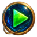

Colour scheme
DownloadCatppuccin Mocha
Soft, pastel accents over a deep mocha canvas. Catppuccin Mocha keeps long sessions comfortable while giving downloads, verification, and errors distinct gentle colours.
WindowBaseHighlightAccent
Make the workspace yours
Download any theme individually and open the resulting .planetarytheme file with Planetary. Colour schemes and icon sets are independent, so every combination is yours to keep.
The collection
Every package contains a manifest that Planetary can index and install. Themes with icons can still be paired with any other colour scheme.
Soft, pastel accents over a deep mocha canvas. Catppuccin Mocha keeps long sessions comfortable while giving downloads, verification, and errors distinct gentle colours.
An indigo observatory palette with brass, cyan, and jewel-toned highlights. Its dimensional enamel icons bring a small instrument-panel feel to every action.

The familiar dark purple editor palette: charcoal surfaces, cool cyan links, electric pink uploads, and clear green, amber, and red status signals.
Vim’s unapologetic terminal character translated for Planetary: black surfaces, luminous cyan text, and vivid ANSI-inspired magenta, green, yellow, and red signals.
Warm retro earth tones, softened contrast, and a teal focus colour. Gruvbox Dark feels like a well-loved terminal without sacrificing status clarity.
A parchment-like light mode with warm cream surfaces, earthy text, and the same unmistakable Gruvbox teal and orange vocabulary.
Arctic blue-grey surfaces with restrained frost-blue activity and aurora-inspired green, yellow, red, and purple statuses.
A balanced charcoal editor palette with cool blue links, purple verification, and softly separated panels that stay readable at a glance.
A retro-futurist control room in plum, amber, magenta, and copper. Its compact illustrated icons give the toolbar a distinctly instrument-like presence.
A deep navy night sky accented with icy cyan and violet. Polar Night’s glossy blue icons add a cool, tactile layer while preserving a calm dark workspace.
A muted, low-contrast nocturne of pine green, rose, and lavender. Rosé Pine is gentle on the eyes while keeping activity colours warm and legible.
Ethan Schoonover’s precise blue-green dark base, with Solarized’s familiar blue, cyan, violet, orange, and red syntax accents.
The light Solarized canvas: warm ivory surfaces, blue focus states, and a carefully balanced contrast that avoids the glare of pure white.
A stormy blue-violet night palette with bright sky-blue links, purple verification, and warm orange warnings to cut through the dark.